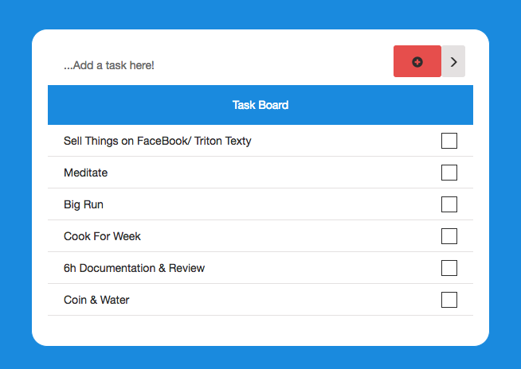
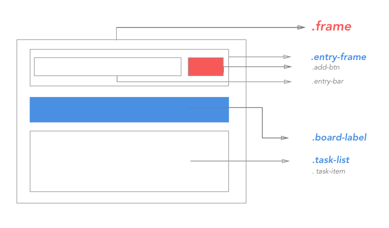

[Home](index.html)
# Final-Project: To-Do List
[<< Previous Lesson](lesson-js-challenge.html)&nbsp;&nbsp;|&nbsp;&nbsp;[Next Lesson >>](lesson-js-3.html)

<br/>
This will be a project that incorporate everything taught so far. <br/>
Because of the length of the project, I've broken up the project into parts.
####The Goal:
The goal is to create a to-do list that is stores task items in a database
so the information persists. This is a web-app that makes requests
to a server that you write, and ties together everything taught so far.
0. You will create html and css that mirrors the given picture above.
1. You will add task items by the add button,
and the visual will display the newly added item.
2. Additionally, you should be able to delete task items visually as well.
3. Finally, the list items added or deleted should reflect a change in the database
Refer to the following completed site for behavior:
[task-list](https://task-to-do.herokuapp.com/)
Get the starter code by checking out the branch
"js-challenge-2" Make sure to save your current work first
```
git add * // Or the name of your specific files
git commit -m "Learned Dom Manipulation"
git push
// Time to checkout new code
git checkout js-challenge-2
```
Read through the instructions and hints,
and try to get to the result below.
If you get absolutely stuck and can't get any help,
There are hints and solution code at the js-challenge-2-solution branch.
Good Luck!
#### Let's Get Started
Make sure to add, commit, and push to save!
```
git checkout js-challenge-2
```
####Part 1: Making the HTML

First, its a good idea to break down the given picture and
plan out your code.
```html
<!DOCTYPE html>
<html>
<head>
</head>
<body>
<div class="frame">
<div class="entry">
<input type="text" id="entry-bar" class="entry-bar" placeholder="">
<button class="add-btn">
</button>
</div>
<div class="board-label"> Task Board </div>
<div class="task-list"></div>
</div>
</body>
</html>
```
With the above, you've lain out the hierarchy of dom elements,
setting a good framework for your styling.
However, if you just display the above, you won't get anything, because
you haven't styled anything. Then, the padding, class naming in CSS
will all fall naturally.
*The actual css implementation will be left up to the reader.
Once you've implemented everything (except the list items themselves).
#### Part 2: Javascript
Now, we set all the interactions. We want to
- Set an event to happen when the add button is clicked
- Grab the text from the input bar
- Append a new element with that text to the list of tasks
The first step would be to add ids to the HTML
Let's translate this into javascript:
```javascript
document.getElementById("add-btn").addEventListener("click", function(){
/* TBD */
});
```
[<< Previous Lesson](lesson-js-challenge-1.html)&nbsp;&nbsp;|&nbsp;&nbsp;[Next Lesson >>](lesson-js-challenge-2-2.html)